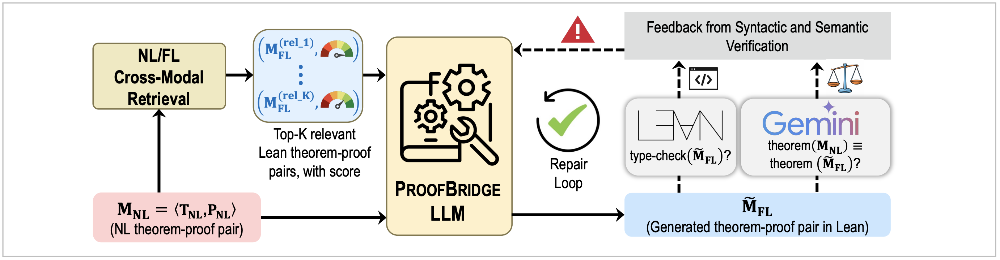
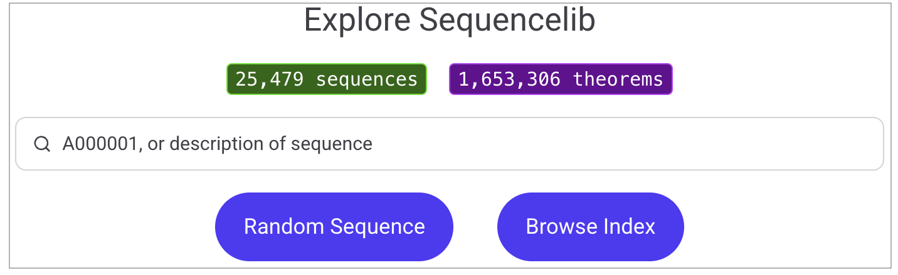
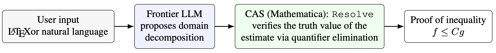

ICLR 2026
ProofBridge: Auto-Formalization of Natural Language Proofs in Lean via Joint Embeddings
Prithwish Jana1, Kaan Kale1, Ahmet Ege Tanriverdi2, Cruise Song1, Sriram Vishwanath1, Vijay Ganesh1
1Georgia Institute of Technology, USA · 2Bogazici University, Turkiye

TL;DR: ProofBridge is a unified framework that translates natural-language theorems and proofs into Lean 4 using joint embeddings, cross-modal retrieval-augmented fine-tuning, and iterative proof repair, yielding notable improvements in semantic and type correctness.
Preprint, 2026
Sequencelib: A Platform for Formalizing Sequences from The On-Line Encyclopedia of Integer Sequences (OEIS)
Walter Moreira1, Joe Stubbs1, Vijay Ganesh2
1TACC, University of Texas at Austin, USA · 2Georgia Institute of Technology, USA

TL;DR: Sequencelib is a formal library in Lean 4 that encodes thousands of integer sequences from the OEIS catalog, millions of theorems about them, and metaprogramming tools to index sequences, compute values, and relate equivalent sequences.
Preprint, 2025
O-Forge: An LLM + Computer Algebra Framework for Asymptotic Analysis
Ayush Khaitan1, Vijay Ganesh2
1Rutgers University, USA · 2Georgia Institute of Technology, USA

TL;DR: An LLM-CAS framework that quickly obtains full proofs of asymptotic estimates that are commonly and laboriously calculated in research mathematics.